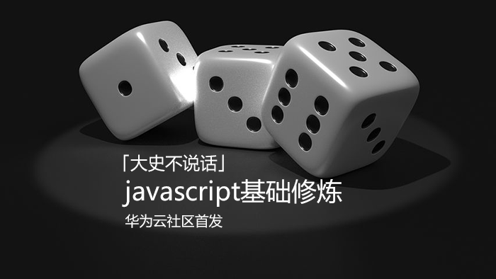
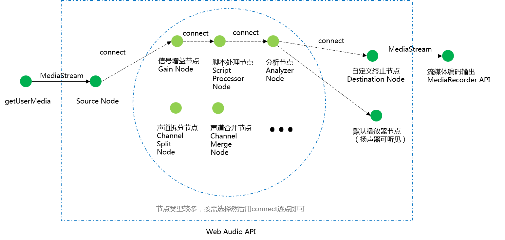

示例代码托管在：http://www.github.com/dashnowords/blogs
博客园地址：《大史住在大前端》原创博文目录
华为云社区地址：【你要的前端打怪升级指南】
本文中最重要的信息：32为浮点数表示
16bit位深数据时是用-1~+1的小数来表示16位的-32768~+32767的！翻遍了MDN都没找到解释，我的内心很崩溃！
最近不少朋友需要在项目中对接百度语音识别的REST API接口，在读了我之前写的【Recorder.js+百度语音识别】全栈方案技术细节一文后仍然对Web音频采集和处理的部分比较困惑，本文仅针对音频流处理的部分进行解释，全栈实现方案的技术要点，可以参见上面的博文，本篇不再赘述。
百度语音官方文档对于音频文件的要求是：
pcm,wav，arm及小程序专用的m4a格式，要求参数为16000采样率，16bit位深，单声道。
PCM编码，全称为"脉冲编码调制"，是一种将模拟信号转换成数字信号的方法。模拟信号通常指连续的物理量，例如温度、湿度、速度、光照、声响等等，模拟信号在任意时刻都有对应的值；数字信号通常是模拟信号经过采样、量化和编码等几个步骤后得到的。
比如现在麦克风采集到了一段2秒的音频模拟信号，它是连续的，我们有一个很菜的声卡，采集频率为10Hz，那么经过采样后就得到了20个离散的数据点，这20个点对应的声音值可能是各种精度的，这对于存储和后续的使用而言都不方便，此时就需要将这些值也离散化，比如在上例中，信号的范围是0~52dB，假设我们希望将0~63dB的值都以整数形式记录下来，如果采用6个bit位来存储，那么就可以识别（2^6-1=63）个数值，这样采集的信号通过四舍五入后都以整数形式保存就可以了，最小精度为1dB；如果用7个bit位来保存，可存储的不同数值个数为(2^7-1=127)个，如果同样将0~63dB映射到这个范围上的话，那么最小精度就是0.5dB，很明显这样的处理肯定是有精度损失的，使用的位数越多精度越高，计算机中自然需要使用8的整数倍的bit位来进行存储，经过上述处理后数据就被转换成了一串0和1组成的序列，这样的音频数据是没有经过任何压缩编码处理的，也被称为“裸流数据”或“原始数据”。从上面的示例中很容易看出，用10Hz的采样率，8bit位存储采样点数值时，记录2秒的数据一共会产生2X10X8 = 160个bit位，而用16bit位来存储采样点数据时，记录1秒的数据也会产生1X10X16 = 160个bit位，如果没有任何附加的说明信息，就无法知道这段数据到底该怎么使用。按照指定要求进行编码后得到的序列就是pcm数据，它在使用之前通常需要声明采集相关的参数。
下图就是一段采样率为10Hz，位深为3bit的pcm数据，你可以直观地看到每个步骤所做的工作。
wav格式也是一种无损格式，它是依据规范在pcm数据前添加44字节长度用来填充一些声明信息的，wav格式可以直接播放。而百度语音识别接口中后两种格式都需要经过编码算法处理，通常会有不同程度的精度损失和体积压缩，所以在使用后两种数据时必然会存在额外的编解码时间消耗，所以不难看出，各种格式之间的选择其实就是对时间和空间的权衡。
浏览器中的音频处理涉及到许多
API的协作，相关的概念比较多，想要对此深入了解的读者可以阅读MDN的【Web 媒体技术】篇，本文中只做大致介绍。
首先是实现媒体采集的WebRTC技术，使用的旧方法是navigator.getUserMedia( ),新方法是MediaDevices.getUserMedia( )，开发者一般需要自己做一下兼容处理，麦克风或摄像头的启用涉及到安全隐私，通常网页中会有弹框提示，用户确认后才可启用相关功能，调用成功后，回调函数中就可以得到多媒体流对象，后续的工作就是围绕这个流媒体展开的。

浏览器中的音频处理的术语称为AudioGraph，其实就是一个【中间件模式】，你需要创建一个source节点和一个destination节点，然后在它们之间可以连接许许多多不同类型的节点，source节点既可以来自流媒体对象，也可以自己填充生成，destination可以连接默认的扬声器端点，也可以连接到媒体录制APIMediaRecorder来直接将pcm数据转换为指定媒体编码格式的数据。中间节点的类型有很多种，可实现的功能也非常丰富，包括增益、滤波、混响、声道的合并分离以及音频可视化分析等等非常多功能(可以参考MDN中给出的AudioContext可创建的不同类型节点)。当然想要熟练使用还需要一些信号处理方面的知识，对于非工科背景的开发者而言并不容易学习。
一般的实现方法是从getUserMedia方法得到原始数据，然后根据相关参数手动进行后处理，相对比较繁琐。
很多示例都是将音频源节点直接连接到默认的输出节点（扬声器）上，但是几乎没什么意义，笔者目前还没有找到使用Web Audio API自动输出pcm原始采样数据的方法，可行的方法是使用MediaRecorder来录制一段音频流，但是录制实例需要传入编码相关的参数并指定MIME类型，最终得到的blob对象通常是经过编码后的音频数据而非pcm数据，但也因为经过了编码，这段原始数据的相关参数也就已经存在于输出后的数据中了。百度语音官方文档推荐的方法是使用ffmpeg在服务端进行处理，尽管明显在音频的编解码上绕了弯路，但肯定比自己手动编码难度要低得多，而且ffmepg非常强大，后续扩展也方便。参考数据大致从录音结束到返回结果，PC端耗时约1秒，移动端约2秒。
核心示例代码(完整示例见附件或开头的github代码仓)：
//WebRTC音频流采集
navigator.mediaDevices.getUserMedia({audio:true})
.then((stream) => {
//实例化音频处理上下文
ac = new AudioContext({
sampleRate:16000 //设置采样率
});
//创建音频处理的源节点
let source = ac.createMediaStreamSource(stream);
//创建音频处理的输出节点
let dest = ac.createMediaStreamDestination();
//直接连接
source.connect(dest);
//生成针对音频输出节点流信息的录制实例,如果不通过ac实例调节采样率，也可以直接将stream作为参数
let mediaRecorder = window.mediaRecorder = new MediaRecorder(dest.stream, {
mimeType: '',//chreome中的音轨默认使用格式为audio/webm;codecs=opus
audioBitsPerSecond: 128000
});
//给录音机绑定事件
bindEventsForMediaRecorder(mediaRecorder);
})
.catch(err => {
console.log(err);
});录音机事件绑定：
//给录音机绑定事件
function bindEventsForMediaRecorder(mediaRecorder) {
mediaRecorder.addEventListener('start', function (event) {
console.log('start recording!');
});
mediaRecorder.addEventListener('stop', function (event) {
console.log('stop recording!');
});
mediaRecorder.addEventListener('dataavailable', function (event) {
console.log('request data!');
console.log(event.data);//这里拿到的blob对象就是编码后的文件，既可以本地试听，也可以传给服务端
//用a标签下载;
createDownload(event.data);
//用audio标签加载
createAudioElement(event.data);
});
}本地测试时，可以将生成的音频下载到本地，然后使用ffmpeg将其转换为目标格式：
ffmpeg -y -i record.webm -f s16le -ac 1 -ar 16000 16k.pcm详细的参数说明请移步ffmpeg documentation，至此就得到了符合百度语音识别接口的录音文件。
如果觉得使用ffmpeg有点“杀鸡用牛刀”的感觉，那么就需要自己手动处理二进制数据了，这是就需要在audioGraph中添加一个脚本处理节点scriptProcessorNode，按照MDN的信息该接口未来会废弃，用新的Audio Worker API取代，但目前chrome中的情况是，Audio Worker API标记为试验功能，而旧的方法也没有明确的提示说明会移除（通常计划废除的功能，控制台都会有黄色字体的提示）。但无论如何，相关的基本原理是一致的。
scriptProcessorNode节点使用一个缓冲区来分段存储流数据，每当流数据填充满缓冲区后，这个节点就会触发一个audioprocess事件（相当于一段chunk），在回调函数中可以获取到该节点输入信号和输出信号的内存位置指针，然后通过手动操作就可以进行数据处理了。
先来看一个简单的例子，下面的示例中，处理节点什么都不做，只是把单声道输入流直接拷贝到输出流中：
navigator.mediaDevices.getUserMedia(constraints)
.then((stream) => {
ac = new AudioContext({
sampleRate:16000
});
let source = ac.createMediaStreamSource(stream);
//构造参数依次为缓冲区大小，输入通道数，输出通道数
let scriptNode = ac.createScriptProcessor(4096, 1, 1);
//创建音频处理的输出节点
let dest = ac.createMediaStreamDestination();
//串联连接
source.connect(scriptNode);
scriptNode.connect(dest);
//添加事件处理
scriptNode.onaudioprocess = function (audioProcessingEvent) {
//输入流位置
var inputBuffer = audioProcessingEvent.inputBuffer;
//输出流位置
var outputBuffer = audioProcessingEvent.outputBuffer;
//遍历通道处理数据，当前只有1个输入1个输出
for (var channel = 0; channel < outputBuffer.numberOfChannels; channel++) {
var inputData = inputBuffer.getChannelData(channel);
var outputData = outputBuffer.getChannelData(channel);
//用按钮控制是否记录流信息
if (isRecording) {
for (let i = 0; i < inputData.length; i = i + 1) {
//直接将输入的数据传给输出通道
outputData[i] = inputData[i];
}
}
};
}在上面的示例加工后，如果直接将结果连接到ac.destination（默认的扬声器节点）就可以听到录制的声音，你会听到输出信号只是重复了一遍输入信号。
但是将数据传给
outputData输出后是为了在后续的节点中进行处理，或者最终作为扬声器或MediaRecorder的输入，传出后就无法拿到pcm数据了，所以只能自己来假扮一个MediaRecorder。
首先在上面示例中向输出通道透传数据时，改为自己存储数据，将输入数据打印在控制台后可以看到缓冲区大小设置为4096时，每个chunk中获取到的输入数据是一个长度为4096的Float32Array定型数组，也就是说每个采样点信息是用32位浮点来存储的，【recorder.js】给出的转换方法如下：
function floatTo16BitPCM(output, offset, input) {
for (let i = 0; i < input.length; i++, offset += 2) {
let s = Math.max(-1, Math.min(1, input[i]));
output.setInt16(offset, s < 0 ? s * 0x8000 : s * 0x7FFF, true);
}
}看起来的确是不知道在干嘛，后来参考文献中找到了相关解释：
32位存储的采样帧数值，是用
-1到1来映射16bit存储范围-32768~32767的。
现在再来看上面的公式就比较容易懂了：
//下面一行代码保证了采样帧的值在-1到1之间，因为有可能在多声道合并或其他状况下超出范围
let s = Math.max(-1, Math.min(1, input[i]));
//将32位浮点映射为16位整形表示的值
output.setInt16(offset, s < 0 ? s * 0x8000 : s * 0x7FFF, true);如果s>0其实就是将0~1映射到到0~32767，正数第一位符号位为0，所以32767对应的就是0111 1111 1111 1111也就是0x7FFF，直接把s当系数相乘就可以了；当s为负数时，需要将0~-1映射到0~-32768，所以s的值也可以直接当做比例系数来进行转换计算，负数在内存中存储时需要使用补码，补码是原码除符号位以外按位取反再+1得到的，所以-32768原码是1000 0000 0000 0000（溢出的位直接丢弃）,除符号位外按位取反得到1111 1111 1111 1111,最后再+1运算得到1000 0000 0000 0000(溢出的位也直接丢弃)，用16进制表示就是0x8000。顺便多说一句，补码的存在是为了让正值和负值在二进制形态上相加等于0。
公式里的output很明显是一个ES6-ArrayBuffer中的DataView视图，用它可以实现混合形式的内存读写，最后的true表示小端系统读写，对这一块知识不太熟悉的读者可以阅读阮一峰前辈的ES6指南（前端必备工具书）进行了解。